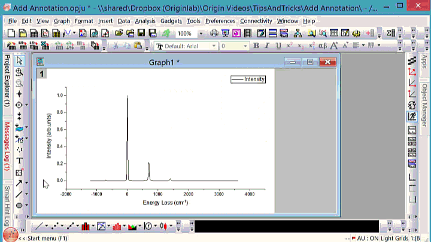
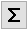

FAQ-491 グラフ上の点にデータラベルを付けるには？
customize-annotation
最終更新日：2021/4/14
データラベルツール で追加したラベルは、以下のように編集することができます。このYoutubeページで動画チュートリアルも参照していただけます。
で追加したラベルは、以下のように編集することができます。このYoutubeページで動画チュートリアルも参照していただけます。
- ラベル上で右クリックしてプロパティを選択します。これによりラベルダイアログが開きます。
- テキストタブで、矢印ボタンをクリックし、コンテキストメニューからフォーマット文字列を選択します。例サブメニューには、さらに複雑なサンプルもあります。あるいは、LabTalk置換表記を使用した文字列を直接入力します。テキストと変数を組み合わせた文字列も使用できます。
- 編集したフォーマットを繰り返し使う場合、デフォルトに設定ボタンをクリックします。保存したフォーマットは、データラベルツールのカーソルの横に「カスタム」が表示されるまで、TABキーを押すことで表示できます。
- 編集したフォーマットを現在のプロット、プロットのグループ、アクティブレイヤ、ウィンドウ全体などのすべてのデータラベルに適用するには、適用ドロップダウンリストから目的の項目を選択します。
- TABキーを押して、次のオプションを切り替えます：(x,y), (x,y)[i], x, y, i
- データラベルオプションは、データラベルツールカーソルの横に表示されます
- ポインタボタン
 をクリックします。次に、ALTキーを押しながら、既存のラベルをポイントからポイントにドラッグします。ラベルは、現在のポイントの状態に従って自動的に更新されます。
をクリックします。次に、ALTキーを押しながら、既存のラベルをポイントからポイントにドラッグします。ラベルは、現在のポイントの状態に従って自動的に更新されます。
- ポインタボタンをクリックします。次に、Ctrl+Shiftキーを押しながら、既存のラベルを別のポイントにドラッグします。新たに追加したラベルは、新しいポイントの状態に従って自動的に更新されます。

- ラベル上で右クリックしてプロパティを選択します。これによりラベルダイアログが開きます。
- テキストタブで、シンボルマップボタンをクリックします。すると、シンボルマップダイアログが開きます。必要な特殊記号を選択し、挿入ボタンをクリックしてデータラベルに挿入します。

キーワード: データラベル, カスタムラベル, カスタムアノテーション